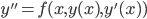
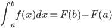

Extrapolate...
Given and taking , approximate
If is on polynomials and is polynomial then every term is polynomial!
is (approximately) a coinductively defined polynomial.
Gershom Bazerman
OBT at POPL 2012

...
Develop a purely semantic account of approximate solutions to differential equations.
Butcher tableau for Runge-Kutta 4
type Step s = (s,TimeDelta)->s
run :: s -> Step s -> TimeDelta -> [(TimeDelta,s)]
class Analytic a where
integ :: a -> a
derive :: a -> a
class Sample a where
sampleAt :: a -> Double -> Double
newtype Poly = Poly [Double]
instance Num Poly where...
instance Fractional Poly where...
instance Analytic Poly where...
instance Sample Poly where...
c.f. Doug McIlroy

where is an indefinite integral (antiderivative) of .
Flip
Distinguish two Fs
type TimeDelta = Double
data Stream a = Stream TimeDelta a (Stream a)
instance Sample a => Sample (Stream a) where ...
instance Num a => Num (Stream a) where...
instance Fractional a => Fractional (Stream a) where...
instance (Analytic a, Sample a) => Analytic (Stream a) where..
instance Sample a => Sample (Stream a) where...
applWith f a b = go a b
where go sx@(Stream dtx x nx) sy@(Stream dty y ny) =
case compare dtx dty of
EQ -> Stream dtx (f x y) $ go nx ny
GT -> Stream dty (f x y) $ go (sdrop dty sx) ny
LT -> Stream dtx (f x y) $ go nx (sdrop dtx sy)
c.f. Conal Elliot
Given and taking , approximate
If is on polynomials and is polynomial then every term is polynomial!
is (approximately) a coinductively defined polynomial.
type PolySpline = Stream Poly
instance {Num, Fractional, Analytic} PolySpline where...
instance Num PolySpline where
fromInteger = pure . fromInteger
negate = fmap negate
(+) = applWith (+)
...
expFun = splice h initExpFun $
(integ expFun' .+ (initExpFun @> h))
`extrapForward` h
where
initExpFun = pure 1
expFun' = expFun
h = 0.01
-- expFun @> 1 = 2.71814
-- exp 1 = 2.71828
-- by comparison, rk3 at h of 0.01 = 2.69120
.
.
springFun = ssplice 0.1 initSpringFun $
integ (integ springFun'') .+ (initSpringFun @> 0.1)
`trimmingTo` 2
`extrapForward` 0.1
where initSpringFun = pure 1
springFun'' = -1 * springFun